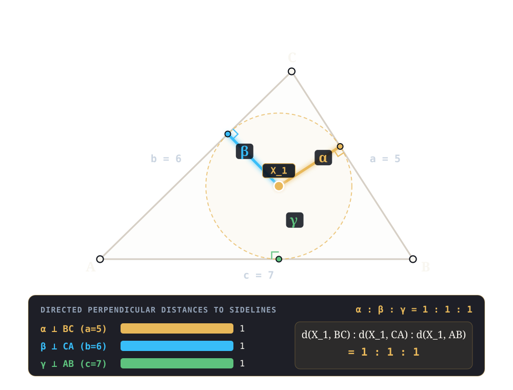
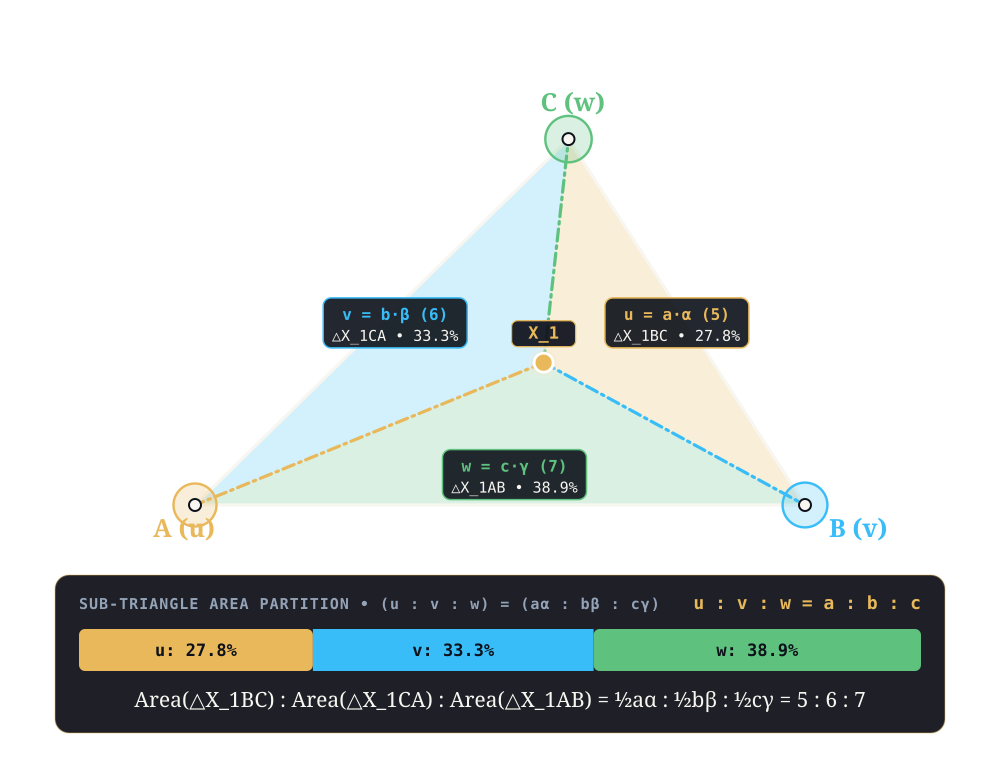
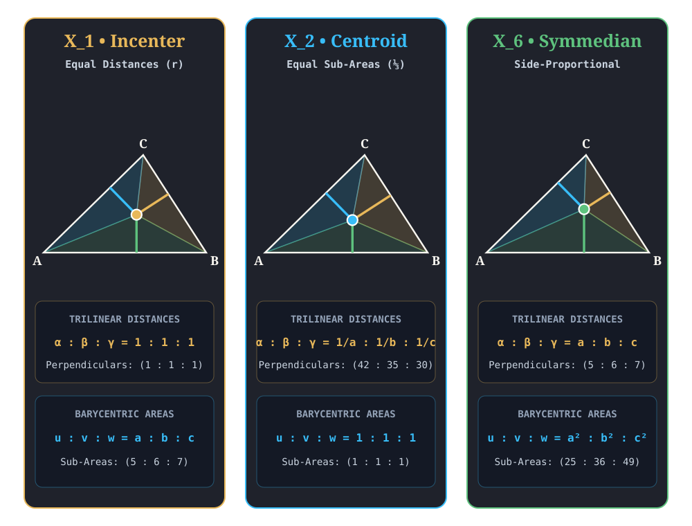

Coordinates in Pictures¶
Every center \(Xn\) in the Encyclopedia of Triangle Centers is specified by two homogeneous coordinate triples relative to a reference triangle \(ABC\) with side lengths \((a, b, c)\):
Trilinear Coordinates \(\alpha : \beta : \gamma\) — the directed perpendicular distances from \(Xn\) to sidelines \(BC, CA, AB\).
Barycentric Coordinates \(u : v : w\) — the signed areas of the three sub-triangles \(\triangle Xn BC, \triangle Xn CA, \triangle Xn AB\) (or equivalently, the center-of-mass weights placed at vertices \(A, B, C\) so that their balance point is \(Xn\)).
Because the area of each sub-triangle is \(\frac{1}{2} \times \text{base} \times \text{height}\), the two coordinate systems are connected by the fundamental Bridge Identity:
1. Trilinear Coordinates in Pictures (\(\alpha : \beta : \gamma\))¶
Drop perpendiculars from a point \(P\) to the three sidelines \(BC\) (side \(a\)), \(CA\) (side \(b\)), and \(AB\) (side \(c\)) at pedal feet \(P_a, P_b, P_c\).
The actual trilinear distances \((\alpha_{\text{act}}, \beta_{\text{act}}, \gamma_{\text{act}})\) are the signed lengths of the three perpendicular struts \(PP_a, PP_b, PP_c\) (positive when \(P\) lies on the same side of the sideline as the opposite vertex).
Since the three sub-triangles have areas \(\frac{1}{2}a\alpha_{\text{act}}\), \(\frac{1}{2}b\beta_{\text{act}}\), and \(\frac{1}{2}c\gamma_{\text{act}}\), the actual perpendicular distances always satisfy the linear constraint:
\[a\alpha_{\text{act}} + b\beta_{\text{act}} + c\gamma_{\text{act}} \;=\; 2\Delta\]where \(\Delta = \operatorname{Area}(\triangle ABC)\).
Homogeneous Trilinear Coordinates \(\alpha : \beta : \gamma\) record only the proportion among these three perpendicular distances: for any non-zero scalar \(k \neq 0\), \((k\alpha : k\beta : k\gamma)\) represents the same point.
Canonical Example — Incenter X1: Because X1 is equidistant from all three sides by the inradius \(r = \Delta / s\), its three perpendicular struts have identical length \((r, r, r)\), giving the simplest trilinear ratio:
\[X1 \text{ Trilinears:} \quad \alpha : \beta : \gamma \;=\; 1 : 1 : 1\]

2. Barycentric Coordinates in Pictures (\(u : v : w\))¶
Join \(P\) to the three vertices \(A, B, C\), partitioning \(\triangle ABC\) into three shaded sub-triangles opposite each vertex:
\(u \propto \operatorname{Area}(\triangle PBC)\) (the gold sub-triangle opposite vertex \(A\), with base \(a = BC\) and height \(\alpha_{\text{act}}\)).
\(v \propto \operatorname{Area}(\triangle PCA)\) (the cyan sub-triangle opposite vertex \(B\), with base \(b = CA\) and height \(\beta_{\text{act}}\)).
\(w \propto \operatorname{Area}(\triangle PAB)\) (the emerald sub-triangle opposite vertex \(C\), with base \(c = AB\) and height \(\gamma_{\text{act}}\)).
Equivalently, in Archimedes’ and Möbius’s statics interpretation, if point masses \(u, v, w\) are placed at vertices \(A, B, C\), then \(P\) is their center of mass:
Canonical Example — Incenter X1: Since all three sub-triangles \(\triangle X1 BC, \triangle X1 CA, \triangle X1 AB\) share the same height \(r\), their areas are proportional to their bases \(a, b, c\):
\[X1 \text{ Barycentrics:} \quad u : v : w \;=\; a : b : c\]On the primary Heronian reference triangle \((a, b, c) = (15, 13, 14)\) (\(\Delta = 84\), \(r = 4\)), X1 partitions the area into exact integer sub-areas \((30, 26, 28)\) in ratio \(15 : 13 : 14\) (and \(5 : 6 : 7\) on the acute picture triangle \((5, 6, 7)\) shown below).

3. The Classic Coordinate Trio: \(X1\), \(X2\), and \(X6\)¶
Comparing the Incenter X1, the Centroid X2, and the Symmedian Point X6 side by side makes the duality between perpendicular distances (\(\alpha : \beta : \gamma\)) and sub-triangle areas (\(u : v : w = a\alpha : b\beta : c\gamma\)) immediately visible:
Center |
Geometric Criterion |
Trilinear Distances (\(\alpha : \beta : \gamma\)) |
Barycentric Sub-Areas (\(u : v : w\)) |
|---|---|---|---|
X1 (Incenter) |
Equal perpendicular distances (\(r\)) to sidelines |
\(1 : 1 : 1\) |
\(a : b : c\) (\(15 : 13 : 14\) on Heronian; \(5 : 6 : 7\) below) |
X2 (Centroid) |
Equal sub-triangle areas (\(\frac{1}{3}\Delta\)) |
\(\frac{1}{a} : \frac{1}{b} : \frac{1}{c}\) (\(182 : 210 : 195\) on Heronian; \(42 : 35 : 30\) below) |
\(1 : 1 : 1\) |
X6 (Symmedian Point) |
Distances proportional to side lengths |
\(a : b : c\) (\(15 : 13 : 14\) on Heronian; \(5 : 6 : 7\) below) |
\(a^2 : b^2 : c^2\) (\(225 : 169 : 196\) on Heronian; \(25 : 36 : 49\) below) |
Notice how X2 and X6 are isogonal conjugates (their trilinear coordinates are reciprocals \(1/a : 1/b : 1/c\) and \(a : b : c\)), while X1 is self-isogonal (\(1 : 1 : 1\)).

4. The Four Canonical Symbolic Reference Triangles¶
Every constructive model and center profile in GEOMETOR’s Encyclopedia of Triangle Centers is evaluated in 100% exact symbolic arithmetic across four canonical reference triangles spanning four algebraic number fields — with side \(c = AB\) placed along the positive horizontal axis from \(A = (0, 0)\) to \(B = (c, 0)\):
Preset |
Field |
Sides \((a, b, c)\) |
Exact Vertices \((A, B, C)\) |
\(\Delta,\; r,\; R\) |
Role in the Codex |
|---|---|---|---|---|---|
Heronian |
\(\mathbb{Q}\) |
\((15, 13, 14)\) |
\(A=(0,0),\; B=(14,0),\; C=(5,12)\) |
\(\Delta = 84\), \(r = 4\), \(R = \frac{65}{8}\) |
Primary acute scalene plate — integer vertices, integer area, integer inradius, and rational-coordinate centers (\(X1 = (6, 4)\)). |
Right |
\(\mathbb{Q}\) |
\((3, 4, 5)\) |
\(A=(0,0),\; B=(5,0),\; C=\left(\frac{16}{5}, \frac{12}{5}\right)\) |
\(\Delta = 6\), \(r = 1\), \(R = \frac{5}{2}\) |
Pythagorean right boundary (\(\angle C = 90^\circ\)) — tests orthic/circumcenter collapses (\(X4 = C\), \(X3 = \text{mid}(AB)\)). |
Kepler |
\(\mathbb{Q}(\sqrt{\phi})\) |
\((1, \sqrt{\phi}, \phi)\) |
\(A=(0,0),\; B=(\phi,0),\; C=\left(1, \frac{1}{\sqrt{\phi}}\right)\) |
\(\Delta = \frac{\sqrt{\phi}}{2}\), \(r = \frac{\sqrt{\phi} - \phi + 1}{2}\), \(R = \frac{\phi}{2}\) |
Golden geometric-progression right triangle (\(1 : \sqrt{\phi} : \phi\), \(\phi^2 = \phi + 1\)) — bridges triangle geometry to the divine proportion. |
Kimberling |
\(\mathbb{Q}(\sqrt{35})\) |
\((6, 9, 13)\) |
\(A=(0,0),\; B=(13,0),\; C=\left(\frac{107}{13}, \frac{8\sqrt{35}}{13}\right)\) |
\(\Delta = 4\sqrt{35}\), \(r = \frac{2\sqrt{35}}{7}\), \(R = \frac{351\sqrt{35}}{280}\) |
Obtuse scalene ETC search standard — exact directed distance \(h_a\) from \(Xn\) to sideline \(BC\) reproduces Clark Kimberling’s 12-decimal search key (\(h_a(X1) = \frac{2\sqrt{35}}{7} \approx 1.690308509457\)). |